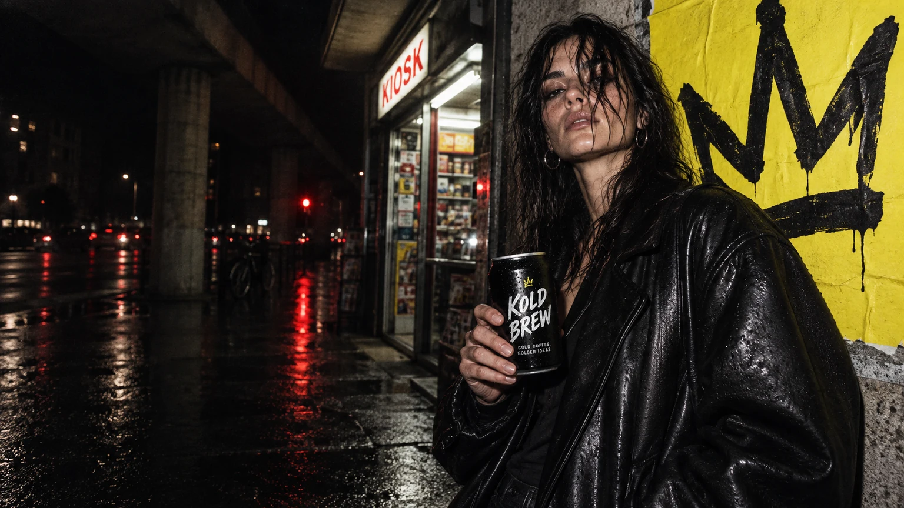

EINE KRONE FÜR DIE NACHT.
EINE KRONE FÜR DIE NACHT.KOLD
BREW
DAS PROJEKT ↗

Kalt gebraut.
Hellwach gedacht.
Kaffee für die Stunden, in denen andere schon Schluss machen. Eine Marke zwischen nächtlichem Kiosk, kaltem Asphalt und dem ersten guten Gedanken.
Idee & Umsetzung ↗